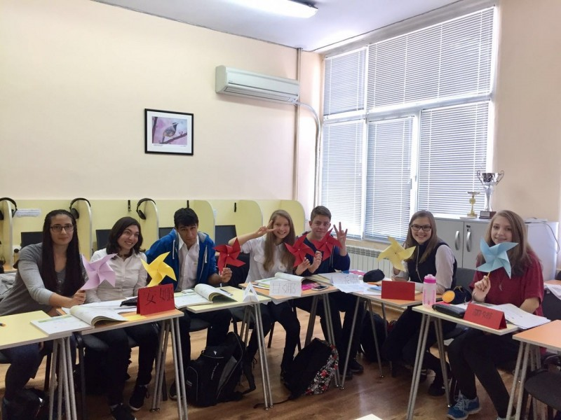

感言 | 逐梦青春 · 与君同行（保加利亚汉语教师志愿者）
 268
268
鸟儿选择了天空，因为它有一双能够凌空飞翔的翅膀；
鱼儿选择了海洋，因为它有一条能够遨游海底的尾巴；
骏马选择了草原，因为它有四只能够驰骋千里的马蹄；
而我们选择了海外汉语志愿教学，因为我们有一颗逐梦青春、与君同行的赤子心！
逐梦青春/与君同行
作者：保加利亚索非亚孔子学院 韩慧琴
九月，丹枫迎秋，又一批汉语志愿者携手并肩踏上了前往异国他乡的汉语教学之路。我们追随着前辈坚定的身影，领略海外汉语教学基地特有的魅力，用责任书写着自己的人生华章。
千里之行，始于足下
已经过去半年的时间了，在外研社培训基地为期六周的培训却还历历在目。
还记得最初在基地的大阶梯教室里，两百多名怀揣梦想、年轻跃动的九零后志愿者教师们的第一次见面，兴奋之情难以言表。还记得海外安全素质拓展活动，大家从陌生到熟悉，齐心协力，共同完成目标。还记得各类幽默风趣、寓教于乐的培训课程，十八般中华才艺样样精通的各位老师。还记得，最后的结业典礼，我们一同歌唱“听那不同肤色齐声说：‘你好，中国，我爱你。’未来总有一天会发觉，我们为自己而骄傲。未来总有一天会见证到，中国梦的闪耀。”
索菲亚孔院志愿者合影
转眼，普罗道路两旁的叶子由绿变黄，渐渐凋落，我的志愿者生活也已经过去了五分之一。记得刚到保国的第一天，十几个小时的航行后，整个人的身体已经处于“葛优瘫”的状态，但精神却异常的亢奋：终于到达目的地了！一下飞机到达机场大厅，就看到了索非亚孔院的老师们。虽然大家从未谋面，但那一刻就像见到了亲人，大家亲切地相互问候，每个人脸上都洋溢着灿烂的笑容。
孔子学院日活动图集
到岗几天后，恰逢第三届“全球孔子学院日”，孔院为此举办了一系列中国文化推广活动：挥毫泼墨的书法表演、妙趣横生的汉语公开课、茶香四溢的茶艺表演、刚柔并济的太极拳与太极柔力球表演以及活力乒乓体验活动。各富特色的中华文化活动不仅吸引了不少市民前来观看、体验，也让我们这批刚到岗的志愿者们大为惊叹。我想，大概再没有比那时更能感受到孔子学院作为中国文化之窗所肩负的使命以及汉语教师作为传播中华文化、推广汉语国际化重任的时刻了吧。
桃李不言，下自成蹊
十月，秋高气爽，金风飒飒，我终于来到了自己赴任的教学点——普罗夫迪夫数学高中。这所高中位于普罗夫迪夫的西南角，是当地一所有名的示范高中，成立于1971年，是由一位名叫Kiril Popov的科学家建立的。听学校的名字，就知道这所高中以数学闻名，但学校同时也很重视学生的语言学习，开设了多种外语课，如英语、德语、法语、俄语、荷兰语和汉语。
记得第一次参观学校的时候，就有一个女孩子跑来羞涩地问我是不是汉语老师，她们什么时候可以选汉语课。尽管那时还没开课，但看到学生满心欢喜、全然期待的样子，作为一名老师，自然也感到很开心。

我的汉语课堂
我的学生以九年级和十年级为主，都是零基础，人数虽然不多，但值得庆幸的是每个人都对汉语有着很高的学习热情，都很认真。从开课到现在两个多月的时间，除了个别特殊情况外，学生们几乎不会缺课。单凭这一点，也可以看得出来，他们是真的喜欢汉语。因为作为兴趣班的汉语课，对他们是没有任何考勤和成绩要求的，全凭学生的自制力。

汉语课文化活动剪影
对于保语为母语，英语为第二外语的他们来说，大部分声母、韵母的发音都很容易。遇到个别发音困难的声母和韵母时，他们都会多次尝试。对学生来说，拼音中最难的部分大概是声调了吧，尤其是第三声。尽管个别同学的发音不太标准，有时还会让大家捧腹大笑，但正因如此，也给课堂添了些许的活力和乐趣。
神奇的汉语拼音，让学生们迈进了中文新世界的大门。独特的中国汉字，则让他们开启了这个古老、神奇国度特有的文化之旅。第一次接触汉字时，我选取了一些象形文字，大家你猜我画不亦乐乎。第一次书写汉字时，我准备了多份田字格，大家一笔一画全神贯注。第一次做名字卡片，写自己的汉语名字时，大家满心欢喜自信满满。第一次……脑海里的点点滴滴，都是学生们认真的模样；教学中的时时刻刻，也都是学生们不经意间带给我的惊喜。感谢备课和教学的这个过程，让我感受到三尺讲台的魅力，更让我体会到一名老师应有的责任感和幸福感。
汉字初体验
学识沉淀智慧，梦想点燃激情。青春正当时，最好的时光理应留在逐梦的路上，就让时间见证我们逐梦青春的热忱与豪迈，就让时间刻录我们播种瀚宇之花坚定的步伐，就让我们听那不同肤色齐声说：你好，中国，我爱你！
【转载】孔子学院总部/国家汉办